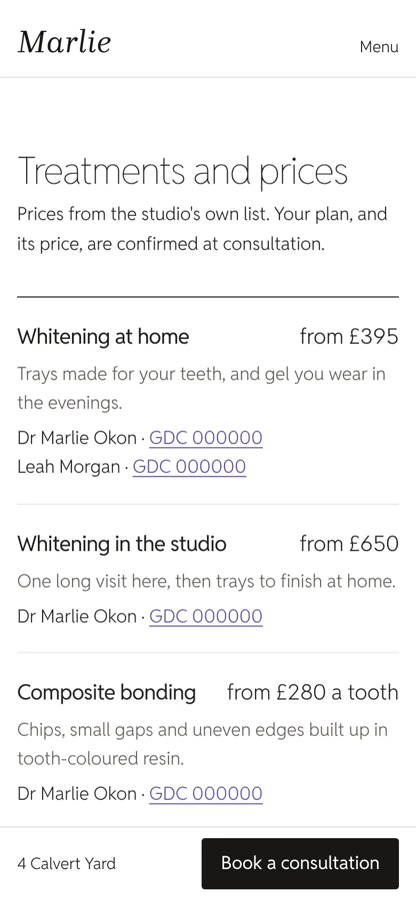
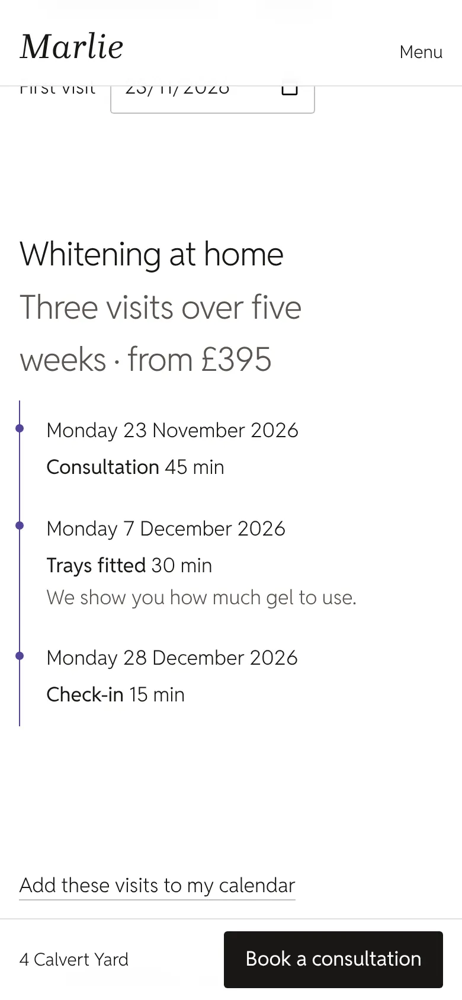
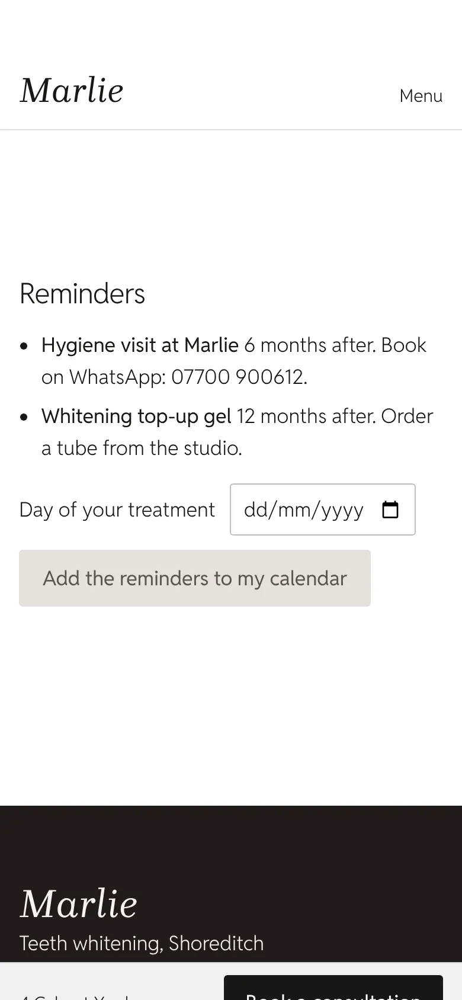
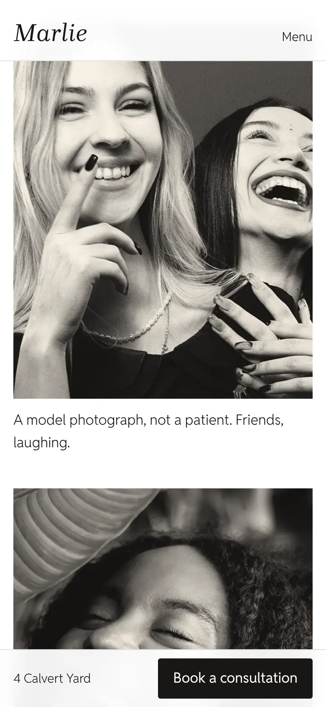
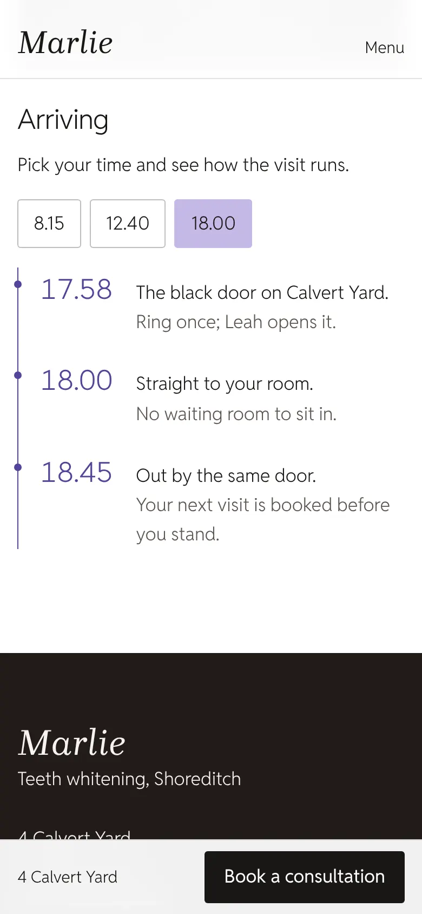

11 · 1.618
Signature
£349 then £35 a month
- Up to 20 pages
- When's the big day, from one date
- Smiles, with recorded consent
- A page for each treatment
- The journal; the studio and arriving
Marlie · teeth whitening, Shoreditch
The six front teeth are the ones that show when you smile. A cosmetic dentist plans each one against the others. Marlie's website is read the same way: six things a patient sees first.
A model, not a patient. Touch a tooth. Widths are measured on this photograph, against the front tooth beside the midline.
Upper right central incisor
A photo-booth strip of four smiles, developing frame by frame as the page opens. On a phone the strip never runs taller than the screen, and Book a consultation stays in the bar at the foot of it.
Over the strip, one plain line: teeth whitening, by a dentist, with the dentist's GDC number at the size of everything else.
Upper left central incisor
I'll tell you honestly what's possible.
Dr Marlie Okon, dentist · GDC 000000 (demo)
Patients tap what they'd like, and the message to the studio writes itself, ready to send on WhatsApp. Nothing clinical is asked, and no one is asked for photos of their teeth.
Live, with the demo's own words
Upper right lateral incisor
Every clinician is named as the GDC asks: role, qualification, country and GDC number, linked to the register. The complaints procedure is on every site, on every plan, at full size, with the Dental Complaints Service wherever there's private treatment.
And the site reads every word before it goes up. A promised shade, "permanent", a guarantee, a laser, "painless" or "specialist" for someone on no GDC list: it won't publish them.
Live: write a line for your website

Upper left lateral incisor
One date in, the dates to book out, worked back from the studio's own timings. Into the calendar, or to the studio in one message.
Live, with the demo's own timings
Upper right canine
Choose a treatment and every visit is laid out: how long it takes, the weeks in between. Give the first date and each visit is dated, ready for the calendar.
Afterwards, the dentist's own aftercare, and reminders for the top-up and the hygiene visit, set from the day of treatment.


Upper left canine
The gallery shows only the studio's own patients, with the consent the studio has recorded, and never a retouched photograph. A before is only ever of the same person.
Arriving: choose the appointment time and the walk from the door to the chair re-times itself.


And the rest of the arch.
One proportion some cosmetic dentists plan to: each tooth about 0.618 the width of the one nearer the midline. The plans are drawn to it. Every one has the booth strip, every GDC line and the complaints page, and no running costs beyond hosting and the domain. Twelve months to start.
11 · 1.618
£349 then £35 a month
12 · 1
£199 then £30 a month
13 · 0.618
£99 then £25 a month
Read outward from the midline: the widest is the most. Any feature can be added to any plan on its own.
Lighthouse 12, mobile, three runs on the Marlie demo's home page.
Send us your treatments, your prices and a few of your own photographs, and we'll make a free mockup of your home page.
hello@sitefloor.com